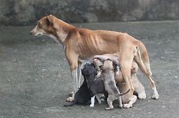
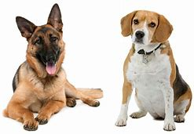
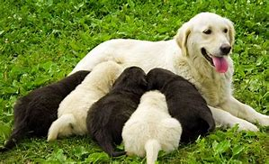
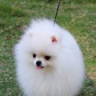
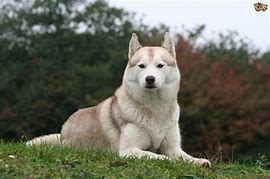

Hard to believe? - Then get to know our pet "Ginger"
The world is changing fast.
Just a few years ago it was a sheep named “Dolly”.
Today it is our mascot named Ginger.
Would you like to meet some of Ginger's pups?
Yes - both of these beautiful pups are from the same litter suckling under Ginger above.
We are in the gene editing world of creating pets of your choice. Pets that are your creation - your dream.
- Want a German Shepherd without bad hips?
- Want a Grand Pyrenees that doesn’t drool or shed?
- OR how about a Chihuahua that doesn't bark?
All of this is possible.
Made to Order Puppies
Without mentioning names, our client was a politician. The white pups were given to his girl friends, and the black pups were given to special friends that supported his agenda.
One white pup is a Pomeranian. A cute litte ball of white fluff.

The other is a white wolf